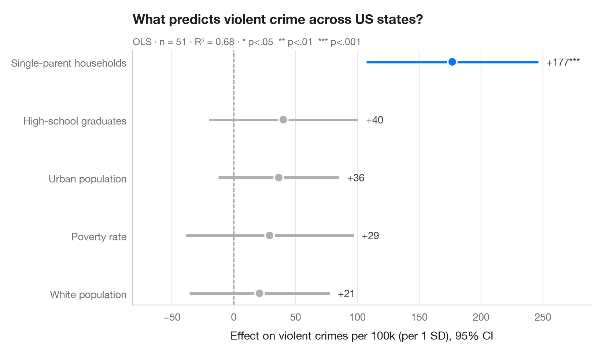

係数プロット
回帰係数の推定値を 95% 信頼区間とともに、項ごとに1行で示します。

係数プロット（ドット・アンド・ウィスカープロットとも呼ばれます）は、回帰分析の表に代わるものです。各点が推定値、各線がその 95% 信頼区間で、破線はゼロを示します。区間がゼロをまたぐ項は灰色で描かれるため、有意な効果がひと目でわかります。
モデルは statsmodels の formula API を用いて、米国50州（＋DC）の凶悪犯罪率を説明しています。説明変数はあらかじめ標準化しているため、係数は直接比較できます。すなわち、説明変数が1標準偏差変化したときの人口 10 万人あたりの犯罪件数の変化です。
コードおよび図中のテキストは英語です。
import matplotlib.pyplot as plt
import numpy as np
import statsmodels.api as sm
import statsmodels.formula.api as smf
# Data: US state crime rates (bundled with statsmodels)
df = sm.datasets.statecrime.load_pandas().data
predictors = ["poverty", "single", "urban", "hs_grad", "white"]
df[predictors] = (df[predictors] - df[predictors].mean()) / df[predictors].std()
model = smf.ols("violent ~ " + " + ".join(predictors), data=df).fit()
# Tidy the results: estimate, 95% CI and p-value per term (intercept dropped)
ci = model.conf_int().drop("Intercept")
coefs = (
ci.assign(estimate=model.params, p=model.pvalues)
.rename(columns={0: "low", 1: "high"})
.sort_values("estimate")
)
labels = {"poverty": "Poverty rate", "single": "Single-parent households",
"urban": "Urban population", "hs_grad": "High-school graduates",
"white": "White population"}
fig, ax = plt.subplots(figsize=(8, 4.6))
y = np.arange(len(coefs))
colors = np.where(coefs["p"] < 0.05, "#007AFF", "#AEAEB2")
ax.axvline(0, color="#8E8E93", lw=1, ls="--", zorder=1)
ax.hlines(y, coefs["low"], coefs["high"], color=colors, lw=2.5, zorder=2)
ax.scatter(coefs["estimate"], y, s=80, color=colors, edgecolor="white", lw=1.5, zorder=3)
for yi, (_, row) in zip(y, coefs.iterrows()):
stars = "***" if row.p < .001 else "**" if row.p < .01 else "*" if row.p < .05 else ""
ax.annotate(f"{row.estimate:+.0f}{stars}", (row.high, yi), xytext=(8, 0),
textcoords="offset points", va="center", fontsize=10, color="#3A3A3C")
ax.set_yticks(y, [labels[t] for t in coefs.index])
ax.grid(axis="x"); ax.grid(axis="y", visible=False)
ax.set_xlabel("Effect on violent crimes per 100k (per 1 SD), 95% CI")
ax.set_title("What predicts violent crime across US states?", pad=26)
ax.text(0, 1.02, f"OLS · n = {int(model.nobs)} · R² = {model.rsquared:.2f} · "
"* p<.05 ** p<.01 *** p<.001", transform=ax.transAxes,
fontsize=9.5, color="#6E6E73")
ax.margins(x=0.15)
plt.show()
図にはオプションの PyStatlas スタイル を使用しています。同じ見た目にするには plt.style.use("pystatlas.mplstyle") を追加してください。
データの出典
- US state crime and social indicators, 2009. U.S. Census Bureau. Statistical Abstract of the United States, state tables for 2009 (crime rates from the FBI Uniform Crime Reporting program). https://www.statsmodels.org/stable/datasets/generated/statecrime.html
Compiled for statsmodels (sm.datasets.statecrime); public domain. See the statsmodels page for each variable's table and footnotes.
これらの例は統計手法を説明するためのものです。図のタイトルは、この特定のデータ（多くは小規模で、古く、部分的な標本）で図が示す内容を述べたものであり、実質的な問いに対する著者の立場ではありません。解釈、背景、データの質については、ここに挙げた元の出典を参照してください。
引用方法
PyStatlas は Thierry Warin が作成・運営しています。研究や業務に役立った場合は、ぜひ引用してください。
Warin, T. (2026). Coefficient plot. In PyStatlas: A Python Gallery of Statistical Graphics for the Social Sciences. https://warint.github.io/pystatlas/regression-models/coefficient-plot/
@misc{warin2026statlas,
author = {Warin, Thierry},
title = {PyStatlas: A Python Gallery of Statistical Graphics for the Social Sciences},
year = {2026},
howpublished = {\url{https://warint.github.io/pystatlas/}},
note = {Source code: https://github.com/warint/pystatlas}
}回帰モデルのその他のグラフ

オッズ比のフォレストプロット
ロジスティック回帰のオッズ比を対数スケールで描き、OR [95% CI] の表を並べます。
ggstats::ggcoef_model(exponentiate = TRUE)
入れ子モデルの比較
学区の数学の成績に関する 3 つの入れ子回帰の係数を並べ、ブロックを追加するにつれて推定値がどう動くかを見ます。
ggstats::ggcoef_compare()
予測確率
モデルに基づく確率曲線を、群ごとに 95% 信頼帯とともに説明変数の範囲にわたって描きます。
ggeffects::ggpredict() / marginaleffects::plot_predictions()